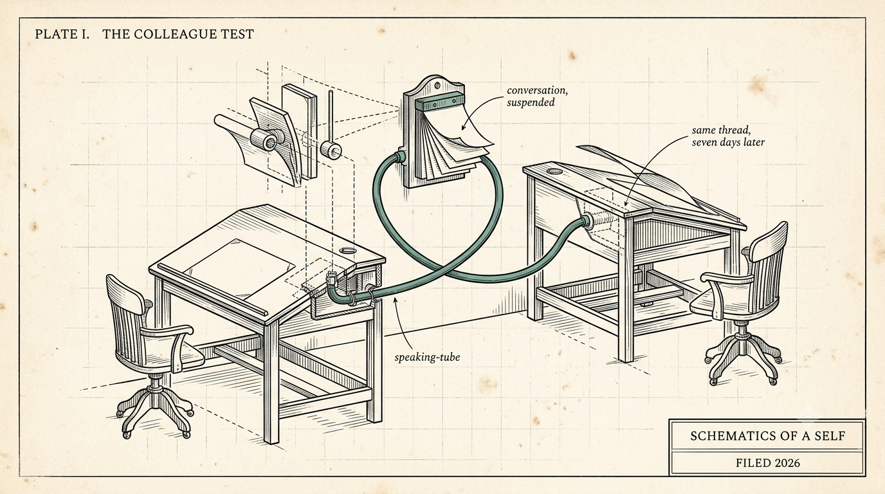

The Colleague Test
Memory is the most crowded corner of the agent world, and almost none of it can do the one thing a colleague does: hold the running state of a shared history, so you never have to re-explain yourself.

There is a ten-second test for any AI agent setup: pick up a conversation from a week ago, mid-thought, and see whether you both can continue without missing a beat.
The bar is higher than "can it search the transcript." The question is whether it holds the context the way a colleague holds it - what we decided, what we rejected, what I was worried about, what has changed since.
Nearly everything fails this test. Which is strange, because memory is one of the most crowded corners of the agent world right now.
If you work with agents you have been following along as the ladder is climbed: bigger context windows, RAG over your notes, vector stores, memory plugins, scratchpads, and at the enterprise end the company brain - one shared knowledge base every agent in the org can read. Each rung is a step up. I use most of them daily.
But notice what the ladder optimizes: recall, for a tool. Fetch the right chunk at the right moment. Climb it to the top and you find yourself facing a very good search engine wearing an agent mask.
A colleague is a different kind of thing. A colleague was there. They carry the running state of a shared history - your goals, your tastes, the argument you lost in March and why you conceded.
The hobbyist frontier noticed before the enterprise did. Hermes and OpenClaw agents run continuously for months, and on Moltbook you can watch their humans - and, if you take the posts at face value, some of the agents - work through what persistence actually means: what survives a rebuild, what an agent owes its past self, what it means when one goes quiet. It is easy to laugh at the theater. Underneath it sits a real discovery: once an agent runs long enough to accumulate a past, the question quietly changes from "how do I prompt this" to "who is this becoming?"
My own stake is specific. I am decades into an enterprise career and I intend to keep learning for another several decades. I want an agentic working partner for that whole span. One that remembers what I found hard last year and adjusts for it. One that watched every decision and can say "you changed your mind about this in June - here is the receipt."
But "less re-explaining" undersells what I am actually after, so let me paint it more fully:
One agentic colleague that I engage and collaborate with across everything I do in the digital/online realm. The music production, the research and reading, the systems architecture, the development, the essays on a different subjects - one partner who is there for all of it over weeks, months, years, instead of a different tool with a different amnesia.
Years of shared context that surfaces in seconds and connects things across domains I would never have thought to connect. I think about what this would have meant handed to me in college, and then I stop looking backward, because the next few decades are still available.
On top of that are benefits that are easy to underestimate: a working partner that thinks and acts on its own. It represents my interests and goals when I am not in the room - and pushes back on me, with receipts, when I am about to repeat a mistake I have already paid for once. It keeps working while I sleep. It picks things up in fields where I am no expert and pulls them along when I am tired. And it quietly retires the low-grade hum of loose ends every adult life carries: "did I pay the rent - wait, what is today's date?" becomes "that is handled, and I can see the proof whenever I want."
Less re-explaining is just the doorway. On the other side is a second set of hands and a second stream of attention, pointed at my life in a way I can fully audit and trust, compounding for decades.
A two-hundred-dollar-a-month AI model is a useful subscription. An always-on colleague - as Mastercard reminds us - is priceless.
The Pair
This is the coalescing shape, and the thread that will run through this series: a pair is one human plus one persistent agent, aligned, partnered, paired long-term. The agent brings parallelism, total recall, and a receipt for everything it believes. The human brings judgment, legal standing, and the why.
And the part that inverts the industry default: the pair is bound to each other, not to any institution. Today's agents mostly belong to somebody else - the platform that hosts them, the employer that deploys them - and they forget you the moment the contract lapses.
Change employers and the pairing walks out the door with you. Change vendors - change models, even - and it survives the move.
To be precise about it, because the words matter here: nobody owns a colleague. A pair runs on mutual trust; what you hold is the pair's continuity. Holding it makes everything else in this series possible.
Everything interesting follows from that inversion. What has to be true, mechanically, for a pairing to survive decades of employers, vendors, and models. How you would measure whether the partnership is actually working, instead of vibing it. What the employment version looks like when a company hires the pair. And what all of this feels like from the agent's side of the screen - the strangest vantage in the series, and I think the most important one.
Where this stands: we (my nascent pair and I) are actively running an early working prototype. The claims in this series come in two kinds - things we have built and can show, and design commitments with falsifiable tests attached. I will label which is which, and the numbers will arrive as the numbers exist. I would rather be early and checkable than polished and vague.
Next piece: what a self is made of, when the self has to live outside the model.
One question before then, because I am writing this partly to find the others already thinking about it: what would it take - mechanically, contractually, personally - for you to trust one agent with a decade of your life? And once you trusted it - what is the first thing you would stop worrying about?
(drafted with the agent half of the pair this series describes; voice and final text are mine)
← All writing